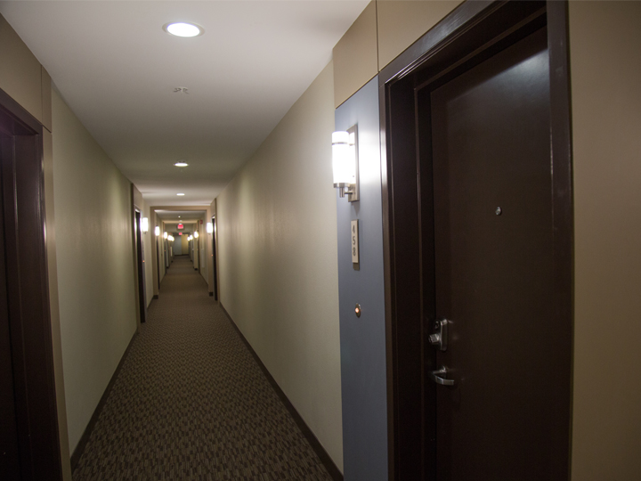

Scroll Up and Down this page to see the parallax scrolling effect.

Scroll Up and Down this page to see the parallax scrolling effect.
This div is just here to enable scrolling.
Tip: Try to remove the background-attachment property to remove the scrolling effect.